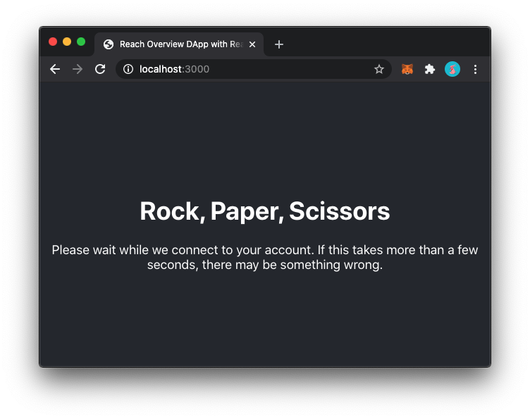
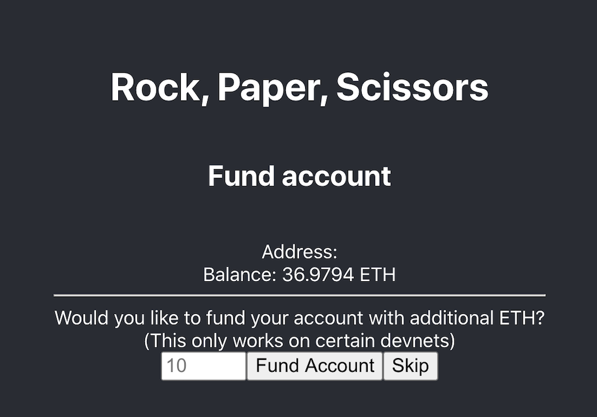
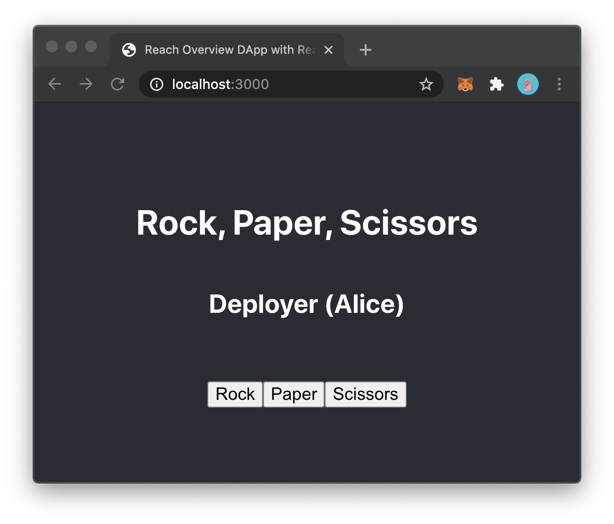
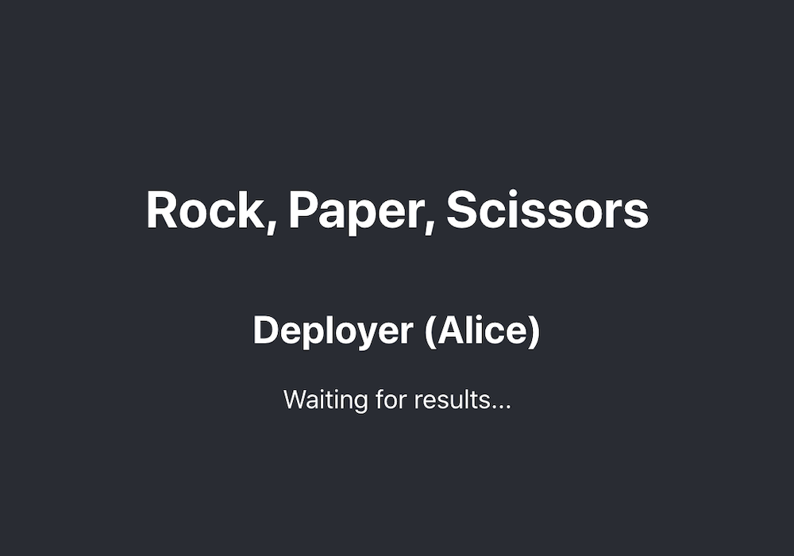
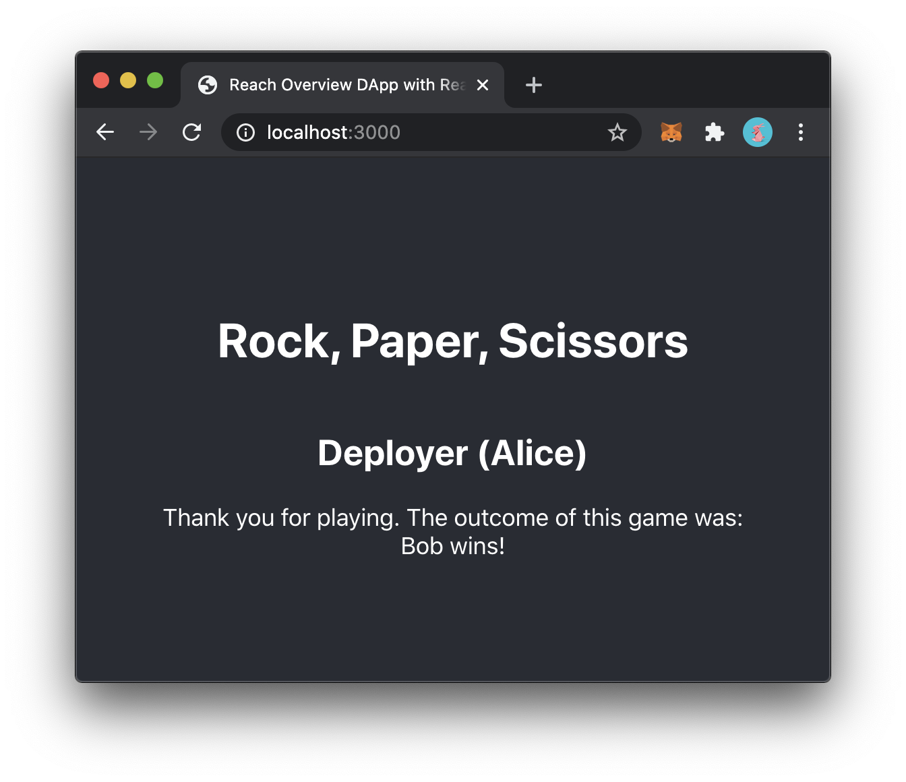
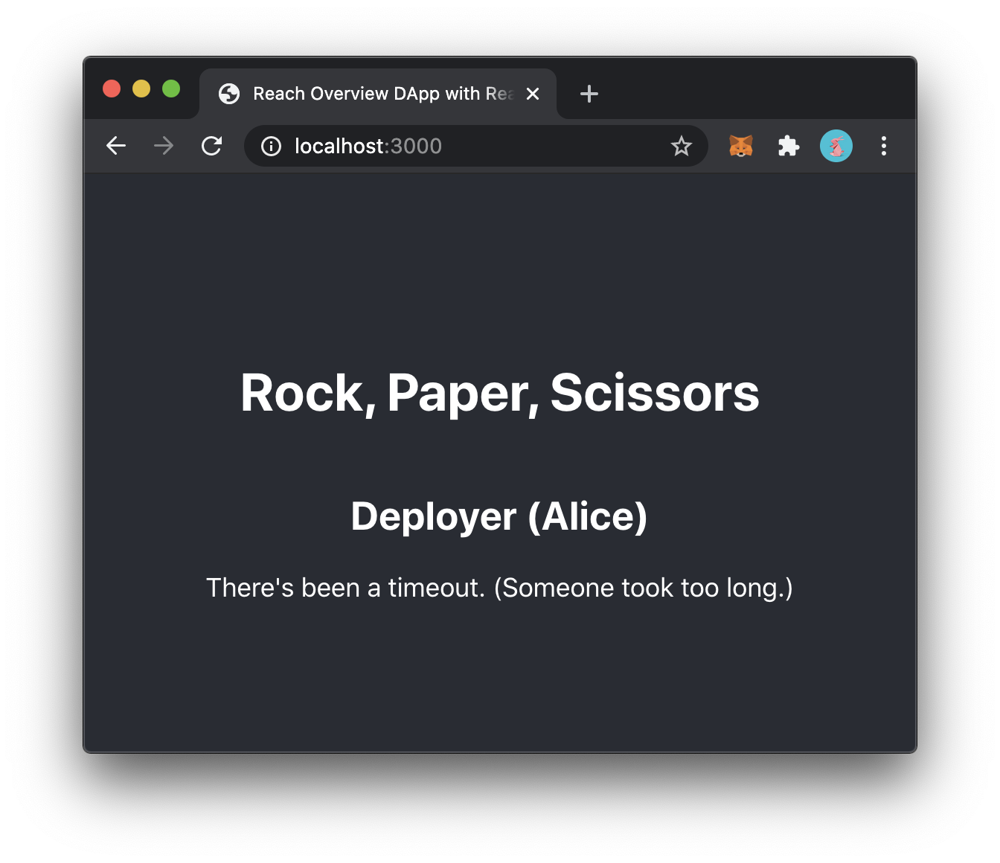
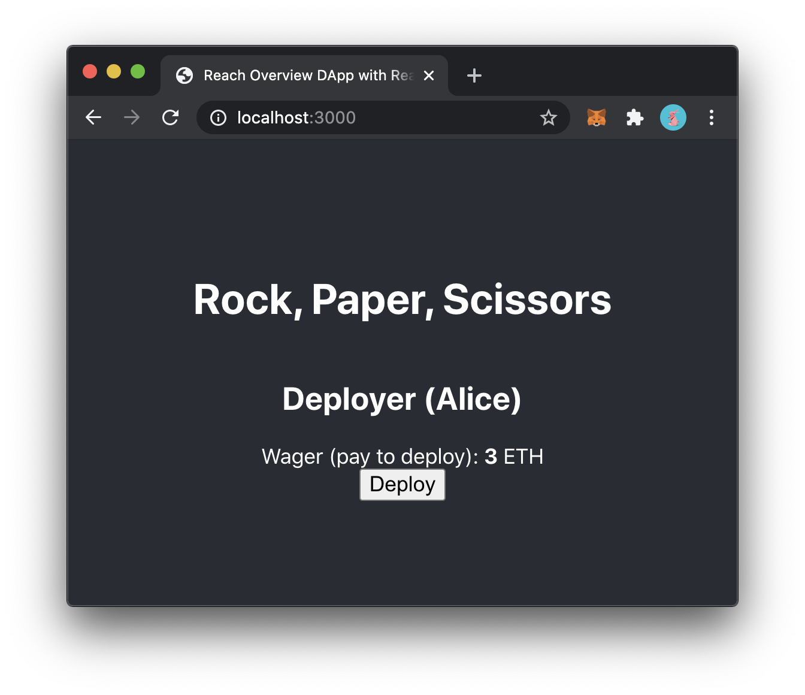
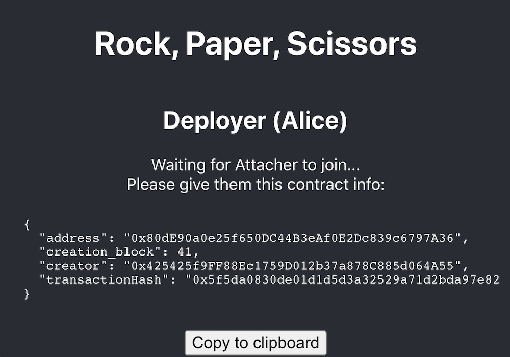
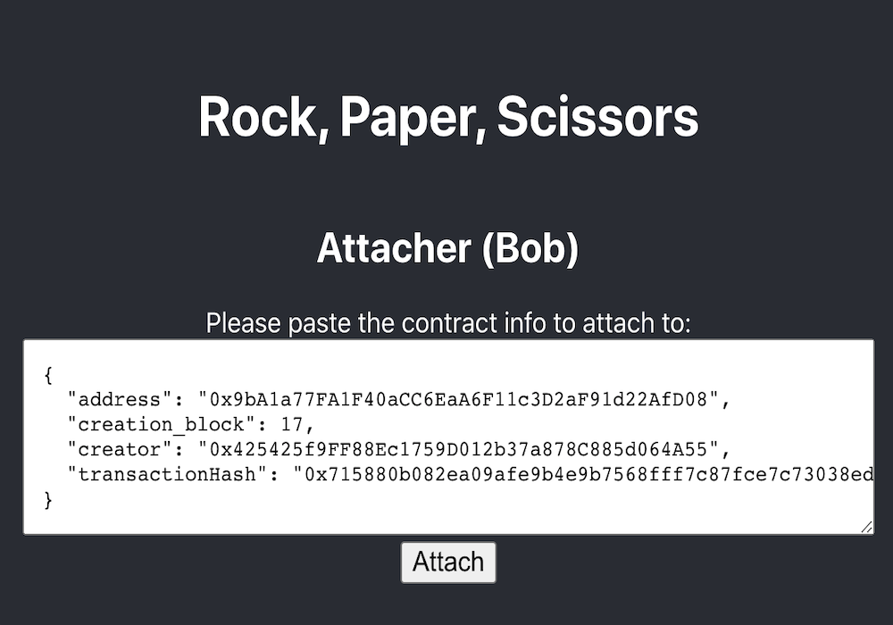
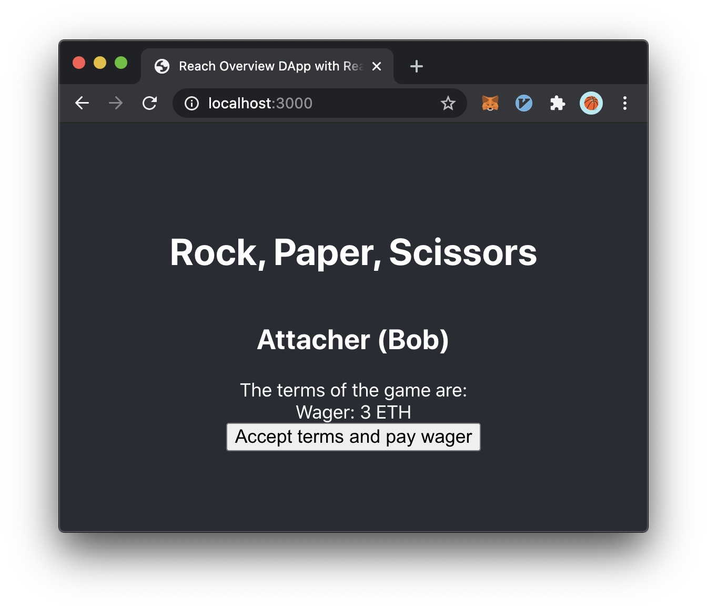

2.9 Web Interaction
In the last section, we made Rock, Paper, Scissors! run as a command-line application, without any changes to the Reach program. In this section, we again won’t be making any changes to the Reach program. Instead, we’ll replace the command-line interface with a Web interface.
We will use React.js for this tutorial, but the same principles apply to any Web framework.
If you’ve never used React before, here are some basics about how it works:
React programs are JavaScript programs that use a special library that allows you to mix HTML inside of the body of your JavaScript.
React has a special compiler that combines a bundle of JavaScript programs, and all their dependencies, into one large file that can be deployed on a static Web server. This is called "packing".
When you’re developing and testing with React, you run a special development Web server that watches and updates this packed file every time you modify a source file, so you don’t have to constantly run the compiler.
Reach automates the process of starting this development server for you when you run ./reach react and gives you access to it at http://localhost:3000/.
Similarly, in this tutorial, we assume that we will be deploying (and testing) with Ethereum. Reach Web applications rely on the Web browser to provide access to a consensus network account and its associated wallet. On Ethereum, the standard wallet is MetaMask. If you want to test this code, you’ll need to install it and set it up. Furthermore, MetaMask does not support multiple active accounts, so if you want to test Rock, Paper, Scissors! locally, you’ll need to have two separate browser instances: one to act as Alice and another to act as Bob.
—
The code in this section does not use the scaffolding from the previous section. Reach comes with a convenience command for deleting scaffolded files:
$ ./reach unscaffold
Similarly, you do not need the previous index.mjs file, because we’ll be writing it completely from scratch to use React. You can run the following command to delete it:
$ rm index.mjs
Or, you can copy the index.rsh file into a new directory and work from there.
—
This code is supplemented with index.css and some views. These details are not specific to Reach, and are fairly trivial, so we will not explain the specifics of those files. If you run this locally, you’ll want to download those files. Your directory should look like:
. |
├── index.css |
├── index.js |
├── index.rsh |
└── views |
├── AppViews.js |
├── AttacherViews.js |
├── DeployerViews.js |
├── PlayerViews.js |
└── render.js |
—
We will focus on tut-9/index.js, because tut-9/index.rsh is the same as previous sections.
1 import React from 'react';
2 import AppViews from './views/AppViews';
3 import DeployerViews from './views/DeployerViews';
4 import AttacherViews from './views/AttacherViews';
5 import {renderDOM, renderView} from './views/render';
6 import './index.css';
7 import * as backend from './build/index.main.mjs';
8 import {loadStdlib} from '@reach-sh/stdlib';
9 const reach = loadStdlib(process.env);
.. // ...
On lines 1 thru 6, we import our view code and CSS.
On line 7, we import the compiled backend.
On lines 8 and 9, we load the stdlib as reach.
React compiles the Reach standard libray in such a way that
it does not have direct access to the environment variables
which are used to select the desired standard library.
This is why you need to pass process.env as an argument
to achieve the desired effect.
.. // ...
10 const handToInt = {'ROCK': 0, 'PAPER': 1, 'SCISSORS': 2};
11 const intToOutcome = ['Bob wins!', 'Draw!', 'Alice wins!'];
12 const {standardUnit} = reach;
13 const defaults = {defaultFundAmt: '10', defaultWager: '3', standardUnit};
14
.. // ...
On these lines we define a few helpful constants and defaults for later, some corresponding to the enumerations we defined in Reach.
App as a React component,
and tell it what to do once it mounts, which is the React term for starting.
Figure 1: The
ConnectAccountview. See: AppViews.ConnectAccount
.. // ...
15 class App extends React.Component {
16 constructor(props) {
17 super(props);
18 this.state = {view: 'ConnectAccount', ...defaults};
19 }
20 async componentDidMount() {
21 const acc = await reach.getDefaultAccount();
22 const balAtomic = await reach.balanceOf(acc);
23 const bal = reach.formatCurrency(balAtomic, 4);
24 this.setState({acc, bal});
25 try {
26 const faucet = await reach.getFaucet();
27 this.setState({view: 'FundAccount', faucet});
28 } catch (e) {
29 this.setState({view: 'DeployerOrAttacher'});
30 }
31 }
.. // ...
.. // ...
39 render() { return renderView(this, AppViews); }
40 }
41
.. // ...
On line 18, we initialize the component state to display the
ConnectAccountview (figure 1).On lines 20 thru 31, we hook into React’s
componentDidMountlifecycle event, which is called when the component starts.On line 21, we use
getDefaultAccount, which accesses the default browser account. For example, when used with Ethereum, it can discover the currently-selected MetaMask account.On line 26, we use
getFaucetto try and access the Reach developer testing network faucet.On line 27, if
getFaucetwas successful, we set the component state to display theFundAccountview (figure 2).On line 29, if
getFaucetwas unsuccessful, we set the component state to skip to theDeployerOrAttacherview (figure 3).On line 39, we render the appropriate view from tut-9/views/AppViews.js.

Figure 2: The
FundAccountview. See: AppViews.FundAccount
Next, we define callbacks on App for what to do when the user clicks certain buttons.
.. . // ...
32 async fundAccount(fundAmount) {
33 await reach.transfer(this.state.faucet, this.state.acc, reach.parseCurrency(fundAmount));
34 this.setState({view: 'DeployerOrAttacher'});
35 }
36 async skipFundAccount() { this.setState({view: 'DeployerOrAttacher'}); }
.. . // ...
On lines 32 thru 35, we define what happens when the user clicks the Fund Account button.
On line 33, we transfer funds from the faucet to the user’s account.
On line 34, we set the component state to display the
DeployerOrAttacherview (figure 3).On line 36, we define what to do when the user clicks the Skip button, which is to set the component state to display the
DeployerOrAttacherview (figure 3).
Figure 3: The
DeployerOrAttacherview. See: AppViews.DeployerOrAttacher

.. // ...
37 selectAttacher() { this.setState({view: 'Wrapper', ContentView: Attacher}); }
38 selectDeployer() { this.setState({view: 'Wrapper', ContentView: Deployer}); }
.. // ...
On lines 37 and 38, we set a sub-component based on whether the user clicks Deployer or Attacher.
Player as a React component,
which will be extended by the specialized components for Alice and Bob.
Figure 4: The
GetHandview. See: PlayerViews.GetHand
Our Web frontend needs to implement the participant interact interface for players, which we defined as:
We will provide these callbacks via the React component directly.
.. // ...
42 class Player extends React.Component {
43 random() { return reach.hasRandom.random(); }
44 async getHand() { // Fun([], UInt)
45 const hand = await new Promise(resolveHandP => {
46 this.setState({view: 'GetHand', playable: true, resolveHandP});
47 });
48 this.setState({view: 'WaitingForResults', hand});
49 return handToInt[hand];
50 }
51 seeOutcome(i) { this.setState({view: 'Done', outcome: intToOutcome[i]}); }
52 informTimeout() { this.setState({view: 'Timeout'}); }
53 playHand(hand) { this.state.resolveHandP(hand); }
54 }
55
.. // ...
On line 43, we provide the
randomcallbackOn lines 44 thru 50, we provide the
getHandcallback.On lines 45 thru 47, we set the component state to display the
GetHandview (figure 4), and wait for aPromisewhich can be resolved via user interaction.On line 48, which occurs after the
Promiseis resolved, we set the component state to display theWaitingForResultsview (figure 5).On lines 51 and 52, we provide the
seeOutcomeandinformTimeoutcallbacks, which set the component state to display theDoneview (figure 6) and theTimeoutview (figure 7), respectively.On line 53, we define what happens when the user clicks Rock, Paper, or Scissors: The
Promisefrom line 45 is resolved.

Figure 5: The
WaitingForResultsview. See: PlayerViews.WaitingForResults

Figure 6: The
Doneview. See: PlayerViews.Done

Figure 7: The
Timeoutview. See: PlayerViews.Timeout
Deployer as a React component for Alice,
which extends Player.
Figure 8: The
SetWagerview. See: DeployerViews.SetWager


Figure 9: The
Deployview. See: DeployerViews.Deploy
Our Web frontend needs to implement the participant interact interface for Alice, which we defined as:
.. // ...
28 const Alice = Participant('Alice', {
29 ...Player,
30 wager: UInt, // atomic units of currency
31 deadline: UInt, // time delta (blocks/rounds)
32 });
.. // ...
We will provide the wager and deadline values,
and define some button handlers in order to trigger the deployment of the contract.
.. // ...
56 class Deployer extends Player {
57 constructor(props) {
58 super(props);
59 this.state = {view: 'SetWager'};
60 }
61 setWager(wager) { this.setState({view: 'Deploy', wager}); }
62 async deploy() {
63 const ctc = this.props.acc.deploy(backend);
64 this.setState({view: 'Deploying', ctc});
65 this.wager = reach.parseCurrency(this.state.wager); // UInt
66 this.deadline = {ETH: 10, ALGO: 100, CFX: 1000}[reach.connector]; // UInt
67 backend.Alice(ctc, this);
68 const ctcInfoStr = JSON.stringify(await ctc.getInfo(), null, 2);
69 this.setState({view: 'WaitingForAttacher', ctcInfoStr});
70 }
71 render() { return renderView(this, DeployerViews); }
72 }
.. // ...
On line 59, we set the component state to display the
SetWagerview (figure 8).On line 61, we define what to do when the user clicks the Set Wager button, which is to set the component state to display the
Deployview (figure 9).On lines 62 thru 69, we define what to do when the user clicks the Deploy button.
On line 63, we call
acc.deploy, which triggers a deploy of the contract.On line 64, we set the component state to display the
Deployingview (figure 10).On line 65, we set the
wagerproperty.On line 66, we set the
deadlineproperty based on which connector is being used.On line 67, we start running the Reach program as Alice, using the
thisReact component as the participant interact interface object.On lines 68 and 69, we set the component state to display the
WaitingForAttacherview (figure 11), which displays the deployed contract info as JSON.On line 71, we render the appropriate view from tut-9/views/DeployerViews.js.
Figure 10: The
Deployingview. See: DeployerViews.Deploying


Figure 11: The
WaitingForAttacherview. See: DeployerViews.WaitingForAttacher

Figure 12: The
Attachview. See: AttacherViews.Attach
Figure 13: The
Attachingview. See: AttacherViews.Attaching

Our Web frontend needs to implement the participant interact interface for Bob, which we defined as:
.. // ...
33 const Bob = Participant('Bob', {
34 ...Player,
35 acceptWager: Fun([UInt], Null),
36 });
.. // ...
We will provide the acceptWager callback,
and define some button handlers in order to attach to the deployed contract.
.. // ...
73 class Attacher extends Player {
74 constructor(props) {
75 super(props);
76 this.state = {view: 'Attach'};
77 }
78 attach(ctcInfoStr) {
79 const ctc = this.props.acc.attach(backend, JSON.parse(ctcInfoStr));
80 this.setState({view: 'Attaching'});
81 backend.Bob(ctc, this);
82 }
83 async acceptWager(wagerAtomic) { // Fun([UInt], Null)
84 const wager = reach.formatCurrency(wagerAtomic, 4);
85 return await new Promise(resolveAcceptedP => {
86 this.setState({view: 'AcceptTerms', wager, resolveAcceptedP});
87 });
88 }
89 termsAccepted() {
90 this.state.resolveAcceptedP();
91 this.setState({view: 'WaitingForTurn'});
92 }
93 render() { return renderView(this, AttacherViews); }
94 }
95
.. // ...
On line 76, we initialize the component state to display the
Attachview (figure 12).On lines 78 thru 82, we define what happens when the user clicks the Attach button.
On line 79, we call
acc.attachOn line 80, we set the component state to display the
Attachingview (figure 13).On line 81, we start running the Reach program as Bob, using the
thisReact component as the participant interact interface object.On lines 83 thru 88, we define the
acceptWagercallback.On lines 85 thru 87, we set the component state to display the
AcceptTermsview (figure 14), and wait for aPromisewhich can be resolved via user interaction.On lines 89 thru 92, we define what happens when the user clicks the Accept Terms and Pay Wager button: the
Promisefrom line 90 is resolved, and we set the component state to display theWaitingForTurnview (figure 15).On line 93, we render the approprite view from tut-9/views/AttacherViews.js

Figure 14: The
AcceptTermsview. See: AttacherViews.AcceptTerms
Figure 15: The
WaitingForTurnview. See: AttacherViews.WaitingForTurn

.. // ...
96 renderDOM(<App />);
Finally, we call a small helper function from tut-9/views/render.js to render our App component.
$ ./reach react
—
To run the React development server with Algorand, you can call:
$ REACH_CONNECTOR_MODE=ALGO ./reach react
Similarly, to run with Conflux:
$ REACH_CONNECTOR_MODE=CFX ./reach react
$ npm install @reach-sh/stdlib
The Reach standard library is undergoing continual improvement and is updated often. If you are experiencing issues with the Node.js package, try updating!
As usual, you can compile your Reach program index.rsh to the backend build artifact build/index.main.mjs with:
$ ./reach compile
If we wanted to deploy this application to the world, then we would take the static files that React produces and host them on a Web server. These files embed your compiled Reach program, so there’s nothing more to do than provide them to the world.
In the next section, we’ll summarize where we’ve gone and direct you to the next step of your journey to decentralized application mastery.
Check your understanding: True or false: Reach integrates with all Web interface libraries, like React, Vue, and so on, because Reach frontends are just normal JavaScript programs.Answer:True
Check your understanding: True or false: Reach accelerates your development with React by baking-in a React development server and the deployment process to test React programs locally.Answer:True